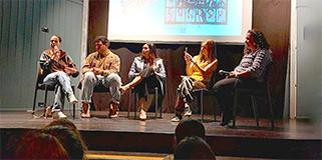

CineMandel: A Social Cinema Club for Graduates
2023-08-01
Back to News from Mandel Center for Leadership in the North
2023-08-01

2023-05-03

2023-04-26
2023-01-09

2022-11-17

2021-12-12

2021-10-17
2021-01-10
2020-12-30

2020-08-10

2019-12-10

2019-10-20

2019-10-17

2019-09-23

2019-04-14

2019-04-04
2019-03-11

2019-02-13

2019-01-22

2018-12-19

2018-11-21

2017-05-15

2018-10-10

2018-04-04

2018-03-20

2018-02-20

2017-11-21

2017-10-17
2017-10-17

2017-02-02

2016-10-27
2016-10-10
2016-07-10

2016-07-01

2016-06-22

2016-05-30
2016-05-25

2016-05-10
2016-05-09

2016-05-03

2016-04-11
2016-04-11

2016-03-23

2016-03-23

2016-02-17

2016-02-06
2015-11-29
2015-11-02
2015-08-04
2015-08-04

2015-05-30
2014-12-15
2014-12-03

2014-03-31

2014-03-30

2014-02-12